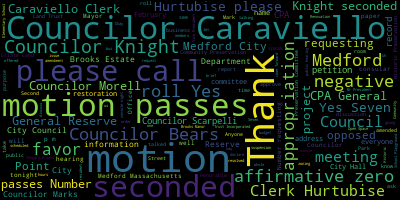
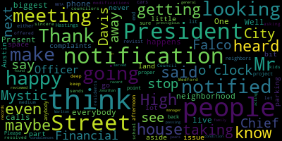
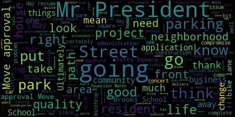

[Falco]: The seventh regular meeting in the Medford City Council will now come to order. Clerk Hurtubise, please call the roll.
[Hurtubise]: Council Bears. Vice President Caraviello. Present. Councilor Knight. Present. Councilor Marks.
[Caraviello]: Present.
[Hurtubise]: Councilor Morell. Present. Councilor Scarpelli. Present. President Falco.
[Falco]: Present. The seventh present. At this time, I'd ask everyone to please rise to salute the flag.
[SPEAKER_03]: I pledge allegiance to the flag of the United States of America, and to the republic for which it stands, one nation, under God, indivisible, with liberty and justice for all.
[Knight]: taking up papers and communications from the Mayor.
[Falco]: On the motion of Council night, seconded by Councilor Caraviello, that the rules be suspended to take papers from the Mayor. The communications from the Mayor, 20-070, February 13th, 2020. Honorable President and members of the Medford City Council, Members of the Medford City Council, City Hall, Medford, Massachusetts 02155 regarding Community Preservation Committee. Dear Mr. President and City Councils, I respectfully request and recommend that your honorable body approve the following recommendation of the Community Preservation Committee. Number one, requesting the appropriation of $50,000 from the CPA Historic Preservation Reserve to the City of Medford Cemetery Board of Trustees in the Department of the Veterans Services for the Oak Grove Cemetery World War I Memorial Restoration Project.
[Knight]: Move approval.
[Falco]: On the motion of Councilor Knight, seconded by? Second. Councilor Caraviello. Clerk Hurtubise, would you please call the roll?
[Hurtubise]: Councilor Bears? Yes. Vice President Caraviello? Yes. Councilor Knight? Yes. Councilor Marks? Yes. Councilor Morell? Yes. Councilor Scarpelli? Yes. President Falco?
[Falco]: Yes. Seven in the affirmative, zero in the negative, the motion passes. Number two, requesting the appropriation of $42,000 from the CPA Historic Preservation Reserve to the Medford Brooks Estate Land Trust Incorporated for phase two of the restoration of an historic stone wall at the Brooks Estate.
[Knight]: Move approval.
[Falco]: On the motion of Council Knight, seconded by Councilor Caraviello. Slow it down. Clerk Urnabes, please call the roll.
[Hurtubise]: Councilor Bears. Yes. Vice President Caraviello. Yes. Councilor Knight. Yes. Councilor Marks.
[Unidentified]: Yes.
[Hurtubise]: Councilor Morell.
[Unidentified]: Yes.
[Hurtubise]: Councilor Scarpelli? Yes. President Falco?
[Falco]: Yes. 7 in the affirmative, 0 in the negative. The motion passes. Number 3, requesting the appropriation of $19,000 from the CPA Historic Preservation Reserve to the Mefford Brooks Estate Land Trust Incorporated for the restoration of select interior public rooms of the Shepard Brooks Manor at the Brooks Estate.
[Knight]: Move approval.
[Falco]: On the motion of Councilor Knight, seconded by Councilor Caraviello. Clerk Kirby, please call the roll.
[Hurtubise]: Councilor Bears? Yes. Vice President Caraviello? Yes. Councilor Knight? Yes. Councilor Marks? Yes. Councilor Morell? Yes. Councilor Scarpelli? Yes. President Falco?
[Falco]: Yes. Seven in the affirmative, zero in the negative. The motion passes. Well, we have a minute just to let everyone know that's here tonight and everyone that's viewing at home. We had a committee the whole earlier tonight to discuss all of these projects in detail where the council had the opportunity and the general public to ask questions. Number four, requesting the appropriation of $9,649 from the CPA Historic Preservation Reserve and $6,351 from the CPA General Reserve to the Medford Brooks Estate Land Trust Incorporated for electrical upgrades of the Shepard Brooks Manor at the Brooks Estate.
[Knight]: Move approval.
[Falco]: On the motion of Councilor Knight, seconded by Councilor Caraviello, Clerk Kurtabis, please call the roll.
[Hurtubise]: Councilor Bears? Yes. Vice President Caraviello? Yes. Councilor Knight? Yes. Councilor Marks? Yes. Councilor Morell? Yes. Councilor Scarpelli? Yes. President Falco?
[Falco]: Yes. Seven in the affirmative, zero in the negative, the motion passes. Number five, requesting the appropriation of $129,921 from the CPA General Reserve to the Medford Brooks Estate Land Trust Incorporated for the restoration of the Porter-Cochere copper roof of the Shepard Brooks Manor at the Brooks Estate.
[SPEAKER_03]: Move approval.
[Falco]: On the motion of Councilor Knight, seconded by Councilor Caraviello, Clerk Urbis, please call the roll.
[Hurtubise]: Councilor Bears? Yes. Vice President Caraviello? Yes. Councilor Knight? Yes. Councilor Marks? Yes. Councilor Morell? Councilor Scarpelli? Yes. President Falco?
[Falco]: Yes. Seven in the affirmative, zero in the negative. The motion passes. Number six, requesting the appropriation of $296,074 from the CPA General Reserve to the City of Medford Public Library for the creation of a local history room at the new Medford Public Library.
[Knight]: Move approval. Second.
[Falco]: On the motion of Councilor Knight, seconded by Councilor Caraviello. We have a resident that would like to speak on this issue. Could we please have your name and address for the record?
[Sharon Deyeso]: Good evening Councilmembers and President Falco, thank you. Sharon Diesso, Mass Avenue, Circuit Road in Medford. I have an issue with number 6, looking at $296,074. We welcome and wish you all a healthy new year. Most of the residents who do speak about CPA did contribute during, you know, the years from their tax money. Sometimes we look over and have time for the agendas. We were hoping in 2018-2019 that non-maintained buildings and big spending needlessly would stop. But looking at a quarter of a million dollars for an additional history room at the library just, you know, doesn't really, pardon the expression, cut it with a few of us. We have very many talented people in the city who will be able to contribute time artistic quality decorations to Some of the space that's going to be at this new library I think this is an item that you really have to think about Before you write out a check for a quarter of a million dollars. We think it's just a little bit unnecessary Thanks.
[Falco]: Thank you On the motion of Councilor Knight, seconded by Councilor Caraviello, Clerk Hurtubise, please call the roll.
[Hurtubise]: Councilor Bears? Yes. Vice President Caraviello? Yes. Councilor Knight? Yes. Councilor Marks? Yes. Councilor Morell? Councilor Scarpelli? Yes. President Falco?
[Falco]: Yes. Seven in the affirmative, zero in the negative. The motion passes. Number seven, requesting the appropriation of $15,000 from the CPA General Reserve to the Grace Episcopal Church for the restoration of the historic exterior doors. On the motion of Councilor Bears, seconded by Councilor Knight. Clerk Hurtubise, please call the roll.
[Hurtubise]: Councilor Bears? Yes. Vice President Caraviello? Yes. Councilor Knight? Yes. Councilor Marks? Yes. Councilor Morell? Councilor Scarpelli? Yes. President Falco?
[Falco]: Yes. Seven in the affirmative, zero in the negative. The motion passes. Number eight, requesting the appropriation of $132,800 for the CPA General Reserve to the Unitarian Universalist Church for the restoration of the historic windows at the David Osgood House.
[Unidentified]: Move approval.
[Falco]: Second. On the motion of Councilor Behr and seconded by Councilor Caraviello. Clerk Hurtubise, please call the roll.
[Hurtubise]: Councilor Bears. Yes. Vice-president Kirby. Oh, yes. Councilor Knight. Yes. Councilor Marks. Yes. Councilor Morell. Councilor Scarpelli. Yes. President Falco.
[Falco]: Yes. 70 affirmative zero on the negative. The motion passes number nine requesting the appropriation of $45,000 from the CPA general reserve to the city of Medford parks division for the purchase and installation of an irrigation system and removal of invasive species at rights pond.
[Unidentified]: Move approval. Second.
[Falco]: On the motion of Councilor Bears, seconded by Councilor Caraviello, Clerk Hurtubise, please call the roll.
[Hurtubise]: Councilor Bears?
[Unidentified]: Yes.
[Hurtubise]: Vice President Caraviello? Yes. Councilor Knight? Yes. Councilor Marks? Yes. Councilor Morell? Yes. Councilor Scarpelli? Yes. President Falco?
[Falco]: Yes, seven in the affirmative, zero in the negative, the motion passes. Number 10, requesting the appropriation of $84,800 from the CPA General Reserve to the City of Medford Tree Warden for trees for Medford Parks projects. On the motion of Councilor Labir, seconded by Councilor Caraviello. Clerk Hurtubise, please call the roll.
[Hurtubise]: Councilor Bears? Yes. Vice President Caraviello? Yes. Councilor Knight? Yes. Councilor Marks? Yes. Councilor Morell?
[Marks]: Yes.
[Hurtubise]: Councilor Scarpelli? Yes. President Falco?
[Falco]: Yes. Seven in the affirmative, zero in the negative. The motion passes. Number 11, requesting the appropriation of $147,306 from the CPA General Reserve to the City of Medford Office of Energy and Environment for Phase 2 of the North Riverbend Park Remediation Project.
[Unidentified]: Move approval.
[Falco]: Second. On the motion of Councilor Behr, seconded by Councilor Caraviello. Clerk Hurtubise, please call the roll.
[Hurtubise]: Councilor Bears.
[Unidentified]: Yes.
[Hurtubise]: Vice president care of yellow. Yes. Council night. Yes. Council marks. Yes. Council Morell. Yes. Councilor Scarpelli. Yes. President Falco.
[Falco]: Yes. Seven in the affirmative zero in the negative. The motion passes. Number 12 requesting the appropriation of $8,064 from the CPA general reserve to the mystic riverbank community gardens for community gardens, fence improvements project. On the motion of Councilor Bears, seconded by Councilor Caraviello. Clerk Hurtubise, please call the roll.
[Hurtubise]: Councilor Bears. Yes. Vice President Caraviello. Yes. Councilor Knight? Yes. Councilor Marks? Yes. Councilor Morell?
[Unidentified]: Yes.
[Hurtubise]: Councilor Scarpelli? Yes. President Falco?
[Falco]: Yes. Seven in the affirmative, zero in the negative, the motion passes. 13, requesting the appropriation of $28,083.19 from the CPA Open Space Reserve in $97,345.81 from the CPA General Reserve to the City of Medford School Department for Brooks Elementary School Playground Renovations Project. On the motion of Councilor Caraviello, seconded by Councilor Knight. Clerk Hurtubise, please call the roll. We had the motion, sorry. Councilor Caraviello, seconded by Councilor Knight.
[Hurtubise]: Councilor Bears. Vice President Caraviello? Yes. Councilor Knight? Yes. Councilor Marks? Yes. Councilor Morell? Yes. Councilor Scarpelli? Yes. President Falco? Yes.
[Falco]: Seven in the affirmative, zero in the negative, the motion passes. Number 14, requesting the appropriation of $107,432 from the CPA Open Space Reserve to the City of Medford School Department for Columbus Elementary School Playground Renovations Project. On the motion of Councilor Bears, seconded by Councilor Knight. Clerk Hurtubise, please call the roll.
[Hurtubise]: Councilor Bears? Yes. Vice President Caraviello? Yes. Councilor Knight? Yes. Councilor Marks? Yes. Councilor Morell? Yes. Councilor Scarpelli? Yes. President Falco?
[Falco]: Yes. Seven in the affirmative, zero in the negative, the motion passes. Number 15, requesting the appropriation of $40,000 from the CPA Open Space Reserve to the City of Medford School Department for a design study for the renovation of the McGlynn Elementary School playground. On the motion of Councilor Scarpelli, seconded by Councilor Caraviello. Clerk Hurtubise, please call the roll.
[Hurtubise]: Councilor Bears? Yes. Vice President Caraviello? Yes. Councilor Knight? Yes. Councilor Marks? Yes. Councilor Morell? Yes. Councilor Scarpelli? Yes. President Falwell?
[Falco]: Yes. Seven in the affirmative, zero in the negative, the motion passes. While we're under suspension, 20071, February 13th, 2020. Honorable President and members of the Medford City Council, City Hall, Medford, Massachusetts, 02155, regarding the Community Preservation Committee. I respectfully request and recommend that your honorable body approve the following on recommendation of the Community Preservation Committee. requesting the transfer of $250,000 from the CPA General Reserve to the CPA Community Housing Reserve. The purpose of the transfer is to earmark these funds for future CPA-eligible affordable housing projects. Sincerely, Brianna Lungelkern, Mayor. On the motion of Councilor Knight, seconded by Councilor Caffiello. Clerk Hernebies, please call the roll. Actually, Councilor Bears would like to speak. Councilor Bears.
[Bears]: I just very quickly want to add that I hope that we will soon have an affordable housing trust in which to deposit these funds. Thank you.
[Falco]: That is on our list of committee of the whole that are going to be scheduled soon.
[Bears]: If residents are wondering where this money may end up, that's one place.
[Falco]: Thank you. On that motion, Clerk Hernebies, please call the roll. Yes 70 affirmative zero and the negative the motion passes If we could please have your name and address for the record
[Roberta Cameron]: That's all right. Roberta Cameron, 12 North Street. I'm on the Community Preservation Committee. I thank you very much for taking all of our items today that we recommended. If I may just make a plug about our next steps. We're initiating our annual review process at this point. where we're going to be collecting input from the public and from city staff, from stakeholders in the community, as well as from yourselves, our elected officials, to review what are our priorities for funding for the next funding round and how can we make this process work better for everyone. So we'll be taking input We have a survey that's live right now. We'll make sure that that the link to that survey gets circulated broadly. We'll be having a public hearing in the middle of April and we'll be having a stakeholder hearing during the daytime here in the council chambers where we can provide some information and collect input from City staff and stakeholder staff in the area so that that information the timeline for all of these things and links to our survey will be provided on the preserve medford.org website and Had one more thing that I wanted to say But we will come back and update you as to what our activities looked like over this past year as part of this So we hope to come back maybe next month to talk to you and have a review about how this process works. Thank you
[Falco]: Thank you. Thank you very much. Thank you for all the work of the CPC for putting this together. Thank you for everyone that applied for the grants as well. So thank you for everyone's participation. On the motion of Consul Knight, seconded by Consul Caraviello, that we revert to the regular order of business. All those in favor? All those opposed? The motion passes. Hearings. 2-0-0-5-0. This is a notice of a public hearing. City of Medford, notice of a public hearing. The City of Medford, uh, the City, Medford City Council will hold a public hearing in the Howard F. Alden Memorial Auditorium on the second floor of Medford City Hall at 85 George P. Hassett Drive in Medford, Massachusetts on Tuesday evening. February 18, 2020, at 7 p.m., on a petition from Redefined Strength and Fitness, LLC, Michael Denton, 215 B. Salem St., Medford, MA 02155, for a special permit to amend its hours of operation in accordance with Medford Zoning Ordinance, Chapter 94, Section 94-145. to operate extended hours at the business of 215B Salem Street, Medford, Massachusetts. The said site being located in the apartment one zoning district as follows. Extended hours of operation requested, 5 AM to 7 AM, seven days per week. Petition and plan may be seen in the office of the city clerk from 103 Medford City Hall, Medford, Massachusetts. Call 781-393-2501 for any accommodations or aids. TDD 781-393-2516. The city of Medford is an EEOAA 504 employer. Mr. President, we're going to wait for the remainder of the meeting to have a brief presentation about the petition. On the motion of Council tonight to waive the remainder of the reading, seconded by Councilor Bears. All those in favor? All those opposed? If we could please have the petitioner come forward tonight, give us a brief synopsis of the issue in your business, and tell us a little bit about what you're trying to do. Sure. What you'd like to do.
[Mike Denton]: Hi, I'm Mike Denton. Redefine Strength and Fitness is going to be a small personal training and group fitness studio, and people like to do that early, so that's why we asked for the extension to 5 a.m. If there's anything further I can tell you, let me know, otherwise that's pretty much it.
[Falco]: OK, thank you. So we have a set to go some procedural things first. So at this point, I declare the public hearing open and open in favor of those in favor of the petition. So if you could please have your name and address for the record.
[Mike Denton]: Mike Denton and 1 Bellevue Terrace, Unit 1A Medford.
[Falco]: And you are in favor of the petition.
[Mike Denton]: I am in favor. Yes.
[Falco]: Name and address for the record.
[SPEAKER_08]: Teresa Racicot, 1 Bellevue Terrace, Unit 1A Medford, and I'm in favor as well as a business partner. Thank you very much.
[Falco]: Anyone else in favor of the petition at this time, I would ask to please step forward. Anyone else in favor? Hearing and seeing none, I declare this portion of the hearing closed. Anyone in opposition of the petition, please come forward. Anyone in opposition? Hearing and seeing none, I declare this portion of the hearing closed. I would ask you to please come forward at this point. Sorry, first time. No worries, no worries. Councilor Scarpelli.
[Scarpelli]: If you could just give us the location. Where is the location?
[Mike Denton]: 215 B Salem Street. So it's, I'm, On the other side of 93, there's Brookline Bank, then used to be Stove King and the Vape Depot. The Vape Depot closed and we're moving in.
[Scarpelli]: And what type of exercises and fitness programs do you look like you'll be?
[Mike Denton]: I would describe it broadly as strength training, fitness training.
[SPEAKER_08]: group exercise classes where you'll do some like cardio movements, like jumping jacks and then battle ropes and riding the bike.
[Scarpelli]: And that would be inside the facility, nothing outside?
[SPEAKER_08]: No. Yeah, all inside. There's no space outside.
[Scarpelli]: That's too bad, because I like space when I work out. Thank you.
[Mike Denton]: We'll have lots of natural light. I'll be there. Feel like outside.
[Falco]: Thank you, Councilor Scarpelli. Councilor Morell.
[Morell]: Thank you, Mr. President. I'm just curious if there might be loud music or any sound to be expected during this time.
[Mike Denton]: There will be music, but not loud music. Currently, the space is under construction. The roof and the walls, all the exterior walls are being insulated. And I kind of don't like loud music.
[SPEAKER_08]: Yeah, we're not going to be wearing microphones to talk over the music. So it'll be sort of like We'll give instructions. The music will be down. We'll probably turn it up a little just to give a little bit of energy for people working out. But it won't be all the time. And as Mike said, it's all being re-insulated and redone. But it's also like thick concrete walls as well.
[Falco]: OK. Thank you. Thank you, Councilor Morell. Councilor Knight.
[Knight]: Mr. President, thank you very much. It's always good to see the vape depot being replaced by a gym, right? I mean, I think it shows we're coming full circle down there on Salem Street when it comes to this issue. I certainly don't have a problem with the petition. However, where it's a 5 o'clock in the morning application, it does raise some concerns to the quality of life of the residents in the neighborhood. So Mr. President, I certainly have no problem voting in favor of this this evening provided that We amend the application that the permit would go with the business and not the address. And that we put a 90 and a 180 day review on the special permit, Mr. President, to be sure that any issues in the neighborhood can be addressed in a timely fashion. As operations progress and business gets busier and you got half of the city of Medford in there beating down your door wanting to become members at your gym. We just want to make sure that the quality of life issues in the neighborhood are protected. This is common practice, we do this quite a bit where we put a 90 day review or a 180 day review on a special permit application for extended hours. And we also make sure that it goes with your business name as opposed to the address so that if you vacate and another entity comes in, that those extended hours aren't grandfathered in. So just a little explanation as to what the motions were that were made. I certainly wish you all the best of luck and don't have any opposition. To them putting in their personal fitness studio down there. Mr. President. However, we have to protect the interest of the neighborhood as well And I think that this is a good compromise.
[Falco]: Thank you console night.
[Scarpelli]: I offer them in Thank You console night console skypelly I Yield I my fellow Councilor mentioned what I wanted to propose. Okay. Thank you.
[Falco]: Thank you Any other questions from the council? Okay, on the motion of Councilor Scarpelli, seconded by Councilor Knight, as amended by Councilor Knight, the amendment would be that the permit goes with the business and that there will be a review after 90 and 180 days. On that motion, Clerk Hurtubise, please call the roll.
[Hurtubise]: Councilor Bears? Yes. Vice President Carriano? Yes.
[Falco]: Yes. 70 affirmative, zero negative. The motion passes. Good luck and congratulations.
[Mike Denton]: Thank you. So should we come back in 90 days?
[Knight]: Oh, okay.
[Mike Denton]: Thank you.
[Falco]: Motions, orders, and resolutions 20-068 offered by Councilor Morell be it resolved that the city administration provide an update on a storefront improvement program to support businesses in improving the curb appeal of our squares. Councilor Morell.
[Morell]: Thank you, Mr. President. So recently had a local business owner reach out and say that they had reached out to the city about a storefront improvement program, and they were told that we no longer run the program or we no longer issue funds. So these are local programs that provide financial support to businesses looking to improve or update their public facing. Facades I did reach out to Ashley Williams the CDBG administrator for the city to see if we could find out more She said in her time with the city three and a half years The program hasn't been run and it was kind of hard-pressed to find the last time this program has been run I actually did find reference to it in a job posting from 2019. So it seems there was previous interest in this but several our neighboring communities run these type of programs where they either offer a 0% deferred payment loan or a or matching grant funds. And a lot of times these funds are small. In many communities, they're capped around $2,000. And I think with many of our local businesses operating on razor-thin margins, this program with small amounts of funds would actually make all the difference. So these programs are funded a number of different ways. So depending if it is a spot basis for a business where decay or blight can be identified, CDBG would possibly fund that. Same thing with businesses being in a certain census track, which we might not qualify for. But I think there's also the option where, with the business district parking funds that, as we were updated, I believe, have been found, for lack of a better word. Perhaps this is a way where we can directly fund businesses or support businesses to increase that curb appeal and beautification that we talk about so often in this city. In this chamber. So really all I'm asking for is the city to provide an update on the sass of the program because that's Some hard to find and just to understand the level of interest so that as businesses do look for this program because this program does exist in Cambridge and blue burn and Worcester and still win in a number of surrounding communities as businesses come into Medford or they've been here for a long time and they're looking for this kind of support. We're able to give them an answer, point them in the right direction. And also to that end, there is the public meeting on March 11th for the CDBG five-year consolidated plan and one-year annual action plan where they are seeking public input. So I think having this update from the city from the status or interest in a program like this would be timely, understanding that public meeting is coming up on the 11th.
[Falco]: So, thank you. Thank you, Councilor Morell. On the motion of Councilor Morell, seconded by Councilor Knight. All those in favor? Aye. All those opposed? The motion passes. Petitions, presentations, and similar papers, 20-069, petition by Cheryl Rodriguez, 281 Park Street, Medford, Massachusetts, 02155, to discuss zoning loopholes being exploited by flippers. The clerk has notified me that Miss Rodriguez is sick, and she could not make it tonight, so on the motion of console night to table this seconded by On the motion of console console marks to table the matter seconded by By constant car viola all those in favor all those opposed the please mark console night is opposed The paper has been tabled On the motion of Council Knight, seconded by Councilor Scarpelli to take papers in the hands of the clerk. All those in favor? All those opposed? The motion passes. Offered by Councilor Marks, be it resolved that the safe routes project scheduled for High Street be discussed.
[Marks]: Councilor Marks. Thank you, Mr. President. The Medford City Council had Committee of the Whole last week. We met with the Mass. Department of Transportation, as well as City Engineer, and they gave us an update on the Safe Routes to School project, which the Brooks School sought funding from the state back some two or three years I think now, and they just received $1 million for upgrades for safe routes along High Street, which includes Hastings Lane, Mystic Street, and Walcott Street. And some of the updates they're looking about curb extensions, bump outs, pedestrian lights in that particular area. As part of this project, we were told by Mass Department of Transportation, that there will also be some land takings in that particular area. And the City of Medford is now reaching out to many of the homeowners along High Street. In addition, Mr. President, there is also going to be a bike lane that will be put on the southbound side of High Street. And the bike lane goes from Auburn Street all the way up to Woburn Street. And it starts and ends in that particular area. On the other side of the street, they will have a lane that could be used, I guess, for both bikes and cars mutually. Just recently, Mr. President, the Traffic Commission also held a meeting because approval would be required by the Traffic Commission to eliminate some of the spots. We were told at last week's meeting, last Wednesday, that they numbered out the spots to be 60 on-street parking spots from Auburn Street all the way up to Hastings Lane. And of the 60, 19, according to their numbers, were going to be eliminated on the southbound side. Now, over the last week, Mr. President, I, like many members behind this reel, have received a number of phone calls, residents that did attend the 2 p.m. Traffic Commission meeting and They weren't quite sure. They thought they were going there to listen to a presentation about this new Safe Routes project. And unbeknownst to them, there was an actual vote taken by the Traffic Commission to eliminate spots in front of people's homes that have been there for four, five, six decades, Mr. President. I don't think anyone behind this reel is against safe routes, and I think I could speak for my colleagues. I think we all welcome that. We all welcome state funding. Anytime you can get additional funding, that's great, Mr. President. But I do have concerns, Mr. President, that this project may not move forward if we're not able to reach a compromise. And I think the best way to do it is at this point, where it's still in the early stages. And I'm formally requesting tonight that we ask our city engineer to go back to the Department of Transportation regarding the southbound bike lane that only is about two city, three city blocks. That they revisit the elimination, Mr. President, of those spots. to accommodate a five foot bike lane that leads to nowhere. It ends, it starts, it ends. And like I said, three city blocks. And we were told that the Department of Transportation will only entertain projects and only fund projects if it includes bike lanes. But in my opinion, Mr. President, it makes no sense to have a bike lane that doesn't continue on. I asked a question that night, well, if it stops all the way up at Hastings Lane, where does the bike go after that? And they said the bike will continue to ride on the street. Because under the laws of Massachusetts, bikes and cars are allowed to have equal access to the street. So I think we can head this off, Mr. President. I don't want to be at the last minute attending to neighborhood concerns when they're going to be asking for a vote of this council to improve land takings, which will make the project even go further down. So I would ask at this point that we intervene, we send a letter to our city engineer, let him know that we feel more comfortable. that the project, while it's in the early stages, be revisited to add those 19 spots that we're going to lose and come out with another solution that doesn't impact parking, Mr. President. Many of the residents were told, well, if you live on a high street and they're removing that spot, just park across the street. And one of the residents that called me said, well, my 80-year-old mother really shouldn't be crossing a very busy street that you're already saying this concerns. and having her walk another 300 yards to maybe get up to the pedestrian light to cross over to get to her house, where we've had this spot in front of my house for five decades. So I can see where they're coming from, Mr. President. Other residents on Mystic Street that contacted me were concerned that by eliminating these particular spots, especially next to the Brooks School, that you're just going to take people that are regularly parking on High Street and push them into the secondary roads. which I think is a concern for residents already in a busy area, Mr. President. So I would ask that in the form of a motion that we send it to the city engineer and have him contact DOT regarding the bike lane and other options available so we can continue to have the 60 spots that residents count on right now, Mr. President. in a very cramped area, not just because of the school, because of the public transportation in the West Method area, because it's right out of the business district in West Method, and that area is very congested as is. Thank you, Mr. President.
[Falco]: Thank you, Councilor Marks. There are a number of Councilors that want to speak on this. So on the motion of Councilor Marks, seconded by Councilor Scarpelli. Councilor Knight.
[Knight]: Mr. President, thank you very much, and I couldn't put it any better than Councilor Marks. Ultimately, we have residents that live in homes that are upwards of $600,000 to $700,000. They pay property taxes in upwards of $7,000 to $8,000 a year, have vehicles, pay excise tax. God forbid they want to have company over the house and you can't park in front of your own house. God forbid you have a landscaper or work being done. Where are they going to park? Where are they going to go, Mr. President? You know, I don't see the need for a path to nowhere, especially when we just spent how many millions of dollars extending a community path one block away at Memorial Park with crosswalk right at Auburn Street, crosswalk right at Winthrop Street that runs actually all the way from Medford Square all the way to the Brooks School, Mr. President. So we actually have a bike path, a community path that's in place now that's been constructed. We all took pictures next to the sign when they did the ribbon cutting. And it's there. It's there. And it's underutilized, Mr. President. But I think that that's a good compromise. I mean, ultimately, we have a community path that's one block away. We have residents in this community that have invested their life savings to purchase these homes, and their quality of life is going to be impacted by it. You know, we talk about zoning and ordinances and taking away inner court parking, Mr. President, inner court parking. You know, you're not allowed to park inside the front, the inner court of your house, but they'll come down and they'll put a bike lane right in front of your house, and then you won't have any place to put your car. So where's it going to go? It's going to go to Mystic Avenue. It's going to go to Mystic Street. It's going to go to Auburn Street. It's going to go to Piedmont Street. It's going to go to... All the ancillary secondary roads that people can't find a place to park their car, they're going to put them in the neighborhoods. Now, just last Wednesday, I had the opportunity to go to the Brooks School for a wonderful winter concert, Mr. President. And I think I'm confident in saying that my kids are never going to win a Grammy. But when I got there, I had to park my car, and it was, there's 100 kids in the Brooks School's kindergarten class this year, and it was the kindergarten concert. So there were a number of families that were there, 100 families. So you can imagine what the parking was like at the Brooks School during a regular school day, Mr. President. I had to park almost in front of Councilor Caraviello's house on Prescott Street. to go to the concert. And that's with the parking on High Street. So as events happen in our schools, as our school population grows, those spots are going to become more and more valuable. So I can't agree more with Councilor Marks. You know, I think we need to take a look at this and figure out a solution that's a compromise that allows the residents to maintain their quality of life while also implementing the Safe Routes to School project. You know, a path that starts here and ends there and doesn't go anywhere. I don't see the benefit, Mr. President. I really don't.
[Falco]: Thank you, Councilor Knight.
[Scarpelli]: Councilor Scarpelli. Thank you, Mr. President. I thank Councilor Marks for bringing this forward and Councilor Knight for adding his input. I think that, not to be redundant, but there are some great safety initiatives in place with the safe routes. You know, I love the Woburn Street Island. I think that's something that's really needed, a crosswalk in that area. And you'd hate to throw away you know, a great plan for a few sticking points. But I will tell you, the phone calls I did receive as well and emails are the same issues and concerns where you're talking about safety being the number one concern and you are, I had a phone call from an 80-year-old resident that had that same concern. response saying that it's safe routes. Now I have to park across the street if I want to park, and I have to cross one of the major throughways. Like I said, I won't be redundant, but I support this 100%. I think to revisit this is very important, and I think we need to really take a hard stop and to revisit this, so thank you.
[Falco]: Thank you, Councilor Scarpelli. Councilor Bears.
[Bears]: Thank you, Mr. President. First, I want to acknowledge definitely that we need to make sure that we have the best community process possible. And I want to acknowledge the city engineer and the traffic engineer's outreach to many houses and families in the area, both the folks who are having takings, the folks who have issues with walls, as we heard extensively last meeting. And I think, absolutely, we need to make every possible action we can to accommodate people with disabilities, people with handicap parking, 80-year-olds who really need access to their home. But there's a few things here. I think the first thing to say is that this is 100% state and federal money. This project doesn't use any city dollars. So I just want to put that out there. And it's not matching. It's not additional. This is a million dollars we won't otherwise have. And no city money will be going towards it. So a few things, one, the studies done by the traffic engineer and the city engineer showed that much of the parking on the south side of High Street does go underused most of the time. That's not to say there aren't cases and specifics. kindergarten concerts and certain people who park in front of their houses of a certain age, but that the statistics showed that most of that parking was going underutilized or unutilized completely. And then just this bike path to nowhere thing. You might not think I ride a bike, and I've never ridden a bike on High Street, but I have a lot of friends who do bike, and That's actually the one place on High Street. If I had to pick anywhere on High Street between the Arlington Rotary and the Winthrop Street Rotary to put a bike lane, it would be exactly where this bike lane is. It's the highest slope uphill in a place where traffic coming across the hill is obstructed view. You can't see people coming up the hill. And you need to separate out bike traffic and street traffic or else you're going to get in a situation where you have bike traffic. slowing up to 10, five miles an hour. You try huffing a bike all the way up the hill from West Medford Square to the top of the hill past Auburn Street, you're gonna be biking pretty slow. And the point of this bike lane is to separate out the traffic at exactly the point at which the speed of the bikes and the speeds of the car traffic are gonna be at the most disparate. So it's not really a path to nowhere. It's saying that if you're on share road shared lanes everywhere else, this is the one spot of the road where you actually want to separate out the traffic. So that's just the bike. That's the engineering behind it. And so I just want to put out there, it's not really a path to nowhere. It's actually putting a bike lane in one of the spots where it's safest.
[Falco]: Point of information, Councilor Marks.
[Marks]: Thank you, Mr. President. You know, the report that was done spoke about the number of spots and how their utilization rate is pretty low in that area. Anyone that would drive, I don't know when they did this report, I don't know who did the study, but anyone that's familiar with that area would know the southbound, maybe not all the way up to Auburn Street, but further down, is always packed with cars. So that's number one. Secondly, Mr. President, has there been any report or indication how many bikes are actually using this particular area? I haven't heard anything about that. And to me, to have a bike lane that ends at the top of Auburn and then going down a windy rest of a high street is far more of a public safety concern when that lane ends, Mr. President, than having a fake lane for three city blocks. And I think the area that would be a concern is not in that particular area. It would be what happens after that, Mr. President, because the bike lane ends, as Councilor Scarpelli mentioned, right where the new intersection will be with Woburn. So they're creating a new island there that's going to be like a fork in the road. That's where my problem is with this particular bike lane, Mr. President. I think you're setting up bike riders for failure in this particular area with a false sense of security. That's all I wanted to add, Mr. President.
[Bears]: Point of information, Mr. President. I think if you ask bike riders, they might disagree with you. I completely agree. I think we should, the windy section between Winthrop Street and Woburn Street, that'd be great, but that's not in the scope of this project. So I don't think we should throw the baby out with the bathwater here. This is going to make the street safer. It's a dangerous street. And if we're saying that this is the end all be all and we kill it over this and something happens, God forbid, I think that's on us. So I'm just saying here, We shouldn't, I agree, we should talk to folks. I'm fine moving the process forward, but if it comes down to the federal and state government saying we will not provide you with this money if you want this change, I think we really need to think hard about that because we're talking about the safety of a major thoroughfare.
[Falco]: Point of information, Councilor Knight.
[Knight]: I think the funding sources are relevant at some point when, you know, well the feds are going to give us a million bucks, so let's impact the quality of life of these residents because it's not tax dollars. You know, I mean, the million bucks is the million bucks. They're going to leave it. Tomorrow, we're going to be just as good as we were yesterday without it. You know, things aren't going to change. The only way things are going to change is if we take it, Mr. President. The only way things are going to change is if we take the money. So let's sit down. Excuse me, I have the microphone. So, Mr. President, ultimately, you know what I mean, I agree with Councilor Marks. We need to have a discussion about this, and we need to figure out what we can do to protect people's quality of life. Maybe that's allowing in-accord parking in areas where bike lanes take away parking in front of their home. That's an option, that's a solution, but it's something we need to talk about before we start going. We've already put a bike lane down Winthrop Street, and we have a resident on Winthrop Street that every 90 days is putting an application in before the traffic commission asking them to take it out so we can park in front of his house. So that's the reality of the situation. It sounds great. Yeah, we're making everybody safer. These bike lanes are making everybody safer. No one's ever going to get in a bike accident again. Not the case. Not the case.
[Falco]: Thank you, Consular Knight, with your point of information. Consular Beers, you can continue.
[Bears]: Yeah, I mean, again, I just think we will be worse off if something happens, and right now we are worse off because people drive 45 miles an hour down High Street, and it's incredibly dangerous. So I just want to make that clear. That's the question. It's a very wide street. This project would make it much safer, safer to cross at all hours. Sure, let's reassess the parking, but I think the idea of a bike lane to nowhere and the rhetoric we're hearing here is a little overblown, and we really If the point of this study is to make sure that we have all our ducks in a row and we know everything, let's go with what the studies have said and what the traffic engineer and the city engineer have been saying, you know, if we really want to get there. And I don't find that the bike lane-to-nowhere thing is grounded in any sort of evidence. Yes, we have another unsafe situation half a mile down the street. We should address this as well. But if you're a biker biking up High Street towards the eastbound east, I'm pretty sure most bikers would say they'd rather have a separated lane so they're not worried someone's going to come up at 35 miles an hour and hit them from behind. Thank you, Mr. President.
[Falco]: Thank you, Councilor Bears. Point of information, Councilor Marks.
[Marks]: I just want to clarify, it's not a separated lane. That's a big clarification. It's its own lane, but it's not a separated lane. It's not separated by anything. It's its own lane, but there's a distinction.
[Falco]: Thank you, Councilor Marks. Point of information, Councilor Bears.
[Bears]: A separately marked lane.
[Falco]: Separately marked lane, okay.
[Bears]: Yes.
[Falco]: Thank you, Councilor Bears. Councilor Caraviello.
[Caraviello]: Thank you, Mr. President. Well, that happens to be the neighborhood where I live, and while everybody else was getting the phone calls, I was getting the people in my house. One of the biggest complaints I heard was a lot of people were never even notified of this, even people on High Street. So I know they said that they notified people, but I think maybe they just notified the people that they were taking land from. But I heard people from Mystic Street and Austin Street, and they said there was no notification of this. And the few that did get the notification couldn't go to the meeting at 2 o'clock. So that's also part of the issue here, too, aside from taking the parking space away. So this next meeting, I think there should be a little bit more notification of the neighbors, not just on High Street, but maybe some of the houses on Mystic and Hastings, where all these cars are going to end up going at some point. So like I say, Please make sure that there is proper notification for this next meeting, and not at 2 o'clock in the afternoon either.
[Falco]: Yes, if I may, that meeting was scheduled by the Traffic Commission. We've all had issues with when they schedule meetings because they're always at 2 p.m., which to me is just, it just gives such a disservice because most of the population can't make it at 2 p.m. So I'm in complete agreement with you on that.
[Caraviello]: Thank you.
[Falco]: Thank you. Got some caviar.
[Morell]: Thank you, Mr. President. I support exploring this a little bit further. I was remiss during that meeting and understanding the handicapped spaces. I'm sure there are no handicapped spaces that would be removed as part of this that are proposed to be removed, but just understanding that those spaces. and the accessible spaces do remain for the people that need them. To the point of this debate over the bike lane to nowhere, I think people are missing the point that this is a safe route to school. So that lane is right around the school. The idea is that children will be in that safe, protected bike lane and get to the school safely. Adults can then merge into traffic bike riders can then merge into traffic as they are used to in many points through many cities I understand the residents who are concerned about having to cross the street if they have to park across the street The point of this project is to make that street safer so that people can cross so that people as they drive through that corridor they see bikes, they see pedestrians, they see cars, they understand this isn't an area that I just fly through. This is an area that has the flashing crossing right now, that has a crossing guard, and you can go to that area in the mornings and watch the crossing guard almost get hit by cars. So I think we are running the risk of losing this money by not being able to see the forest through the trees. And people talk about not having money to do things in Medford and we have a million dollars to make these streets safer, to make the streets safer in front of our school, to support children getting to school, to support alternative transportation to school, to remove some of the cars from the area because people are walking, because people are biking. And we're looking for ways to lose this money. So I do support exploring it further, seeing if there are options where we can come to a compromise. But I think we are not seeing the bigger picture here. Thank you. Thank you, Councilor Morell.
[Falco]: Councilor Bears.
[Bears]: Yeah, and just another point of information. I believe that the folks from MassDOT and the city engineer said that they permit for Safe Routes to School over a five-year period, 15 to 20 projects are approved during that time, and there were at least double the applications of that. It was an incredibly selective process. We were one of, I believe, three projects in the whole state to be permitted, at least that's my recollection from the meeting in that year. A lot of people did a lot of work to get to this point, including a lot of parents who send their kids to the Brooks School.
[Falco]: Thank you, Councilor Bears. Mr. President. Councilor Caraviello is up next. Councilor Caraviello.
[Caraviello]: It's lit here. I don't think anybody is looking to stop the project or just back away from it. I think we're looking to revisit it and see if we can make some modifications. I think that's all that we're, I think that's all my councilors are asking for is let's see what we can do to make a happy medium to keep the residents happy and the kids going to school happy. So, I don't, I say, I don't think we're looking to stop it.
[Falco]: Point of information, Councilor Morell.
[Morell]: I did clarify with the city engineer that this funding is based on the multimodal. So it's walking and biking. So the compromise has to include biking in some way.
[Falco]: Thank you, Councilor Morell. Councilor Caraviello. Thank you. Councilor Marks.
[Marks]: Thank you, Mr. President. And that was when I made my opening statement to see if we can come up with an alternative. And it's our job as elected officials to also represent the neighborhood. And I think that's what we're doing. And the reason why I brought it up now, Mr. President, so we wouldn't be bringing the issue up at the last hour when everything is all set in stone, all the land takings are signed off, and then they need a vote of the council. This gives them ample time to revisit the process, Mr. President, and find out what we can do to accommodate the residents that have a hardship, Mr. President. That's all we're asking here tonight. We're not asking to stop the project. We're not asking to give money back. You know, that's a red herring. No one's asking for that, Mr. President. We're asking to safeguard residents that contact us and have every right to do so because it's a quality of life issue that's impacting them, Mr. President. You know, so any project worth its weight, Mr. President, needs to be properly vetted. The fact that the state may come in and say, well, the federal government, this is how it's going to work, that's fine for them, Mr. President. Then it's up to us as a community to stand up and say, this works for us, and then comes for a compromise. That's all I'm saying. Thank you, Councilor Marks. Councilor Scarpelli.
[Scarpelli]: Again, I think that was my initial input with this is that it's not something that we want to eliminate. but it's looking for alternatives. And I think that there could be something as simple as notifying those residents that might be elderly that do qualify for handicap placards that never had an issue with that in the past that can now apply for that. Or maybe it could be something that you look at different times where parking overnight might be an issue. That might be the biggest issue with them. And maybe making it so when it's the most dangerous times that they can look at different parking restrictions. So there's so many different variations to look at this. And again, I don't want anybody to be confused with my input with eliminating something, or saying we don't want this money, or we don't want to keep our bicyclists safe, or we don't want our students at the Brooks. Because to be honest with you, I got a lot of phone calls from parents from the Brooks that had some concerns. And one of the concerns with what Councilor Knight said is that when they do have a concern with, or an issue with the school, or they have something, there is overflow parking. Putting them further away from the school further away from that parking area That's what they're concerned about their safety is having their child and parents or grandparents walk now that extra area so I understand you know we have some You know allegiance to our bike riders, but that's not that it's not this isn't a for or against them. This is something that just to look forward to a dialogue that making sure that like Councilor Caraviello said is getting those neighbors because we're now a community of transparency and making sure that everybody knows what's going on. I think that's one of the things that The feedback I did get back was that the communication was really about taking of the land, but really not defined of taking of parking spots or having the input of those residents. And I think that is a huge piece that has to be sent in that motion. So thank you, Mr. President.
[Falco]: Thank you, Councilor Scarpelli. Councilor Bears.
[Bears]: Thank you, Mr. President. I think I started my remarks saying I agree that we need to make sure that community input is what it needs to be and that everyone has a chance to get notified and have their voice on it. I just also want to make sure that we don't, in the process of doing that, use rhetoric that may not be entirely accurate about bike lanes, that may injure or bias The people viewing to think that one part of this project is less important than the other. I think we're balancing needs, right? We're talking about balancing the need for on-street parking and the need for bike safety. And then this third need, which is what are the requirements of the project? Or what are the requirements of the funding? And I just think we need to be careful with the words that we use. I mean, to say that this bike lane goes to nowhere. It's not exactly accurate to its purpose. So that's that's the reason that I brought it forward again. I'm not biking up the street. I'm driving. So, you know, I have it's not coming from my personal experience. But, you know, that's where I'm coming from on this. And I also think we just need to make sure that we don't let people think. You know if we want this project to go forward we need to make sure that we're being completely open that I think as admitted here. We need to look at the options and maybe keeping on street parking in some cases won't be an option if we want to move forward. And I don't think we want through the idea of saying we want to compromise and come together on this which I don't think is a bad thing. I just don't want to think that we can also say that everyone's going to get everything they want at the end of the day because that's not really what we're in the business here. It's it's we can't keep all the parking and do the bike lane and so maybe there's a solution here. Maybe there's not. And I think we need to be open about that. And I also think we need to be open about the timeline that we're on which is you know we have some time here. I think this is a better time to bring it up in three months from now. And I completely agree with that. But you know we do have a timeline to keep for land takings and all of this to go forward. So I just want to make sure that while we're respecting that and respecting what our reality of our options are here that we don't let people think that they're going to get something that they're not going to get out of it as well. I think we need to be realistic about what this final, what the end game here, what the solution might be. And that's where I'm coming from on it. And I think that's our job.
[Falco]: Thank you, Councilor Bears. Councilor Knight.
[Knight]: I think we've beaten the horse to death, Mr. President, on this one.
[Falco]: I would agree. Everyone has brought in some very valid points. And we do have a resident that would like to speak on this, or maybe a few residents. So if we could please have your name and address for the record.
[Jean Nuzzo]: Sure. Jean Nuzzo, 35 Parrish Street. Definitely, if you've ever spent any time in West Medford on High Street in that area, while there's not a significant high number of bicyclists. There are many, and they travel that road faithfully, and it is a dangerous area for them to be. One of the things that we do in the industry that you may want to consider is a mock-up... The cycling industry? No, in the construction industry.
[Knight]: I do not cycle.
[Jean Nuzzo]: Although, you know, in my younger days. One of the things we do do is we mock up and we mark out space, especially in these incremental changes. There are organizations like Team Better Block, I think they're called, that will come in and chalk mark the area in advance so that the residents and the community can see what the impact is that you're going to affect. for a change. It's not a lot of money, it's not a lasting change, but it allows people to see that change and then start to provide meaningful feedback because most people cannot look at a drawing and truly conceptualize what the impact of that is. And I think we saw that down in South Medford across from the Tufts Pool, where we invested significant money to make a change to the flow of traffic. And it's been disastrous for the neighborhood because it put all the traffic down the side street. And while the Brooks School has a hawk signal that flashes, the Columbus School does not. and they get a significant amount of traffic and cars flow very fastly there as do the Roberts and the McGlynn so I think holistically we have a problem with people traveling excessively fast through our city and to give attention to one school and not mention all the others is really not equitable. That's my first thought. And I would encourage you to look at that opportunity, to mark up those streets and avoid the consequence that we are seeing over on Tufts. The other point that gives me grave concern is that we are talking about eminent domain taking of private land for public safety and usage for bike paths and sidewalks and safe schools, which are all safe walking to school, which are all important. But at the end of the day, it's an eminent domain taking of public land. And that is a very slippery slope. So I would ask you, today it's this area, three months from now it may be another. Our highest level for public safety is the site formerly known as the Lawrence Memorial Hospital. Are you ready to take that by eminent domain? It is a very slippery slope. So what I would urge you to do is look at maybe marking up the space and seeing what the implications are before you open that Pandora's box. And I thank you for your time.
[Falco]: Thank you. Please have your name and address for the record.
[Miguel]: Hi, my name is Melissa Miguel and I live on Bowen Ave and in full disclosure I just came here tonight to listen, wanted to see the new council, see how things are going. What I'm hearing tonight with this bike lane is alarming to me and it's what I've been a resident of Medford for 17 years and what Medford lacks is planning. We do not have a street and sidewalk reconstruction plan. We just do something because the state is giving us money. Let's do it. Right. How do you get to this three lane, this three block bike lane in front of the Brooks? Do we have a bicycle network plan that has identified slow, low volume? low-speed streets for these cyclists to get there, or we're just going to say, oh, on these three blocks in front of the Brooks School, you can get safely. But how the hell you get there, you're on your own. I ask this council to step back and look at the city as a whole and start making five-year plans for things like bike lanes. I'm not saying I'm against the bike lane, but to throw, use that money from the state to do a bike network plan. The city of Cambridge has one.
[Falco]: Point of information, Councilor Morell.
[Morell]: As I understand, we do have a bike network plan. I don't know how old it is, but I have seen it. There is a bike network plan that exists.
[Miguel]: So we're going to connect those three blocks to the bike network plan? And I'm not here to criticize, and I'm not here to compliment. I'm just here to say we need to take a step back. I live on Bowen Ave. If you drive down my street, we have the Grand Canyon in front of everybody's driveway on our street. And they come, and they fill it with cold patch, and that lasts about two days, and it goes away. Okay, I asked the city, I called the city engineer, can you tell me where the Chapter 90 funding is being spent? Can you tell me the last time Bowen Air was paved? Nobody has any idea, not a clue. So I just ask that when you're spending this money, you think about doing long-term planning and not plopping a three, and now what if the state doesn't give us any more money, we have no more money, and like you said, you have somebody now speeding down High Street because for three blocks they felt safe. Why don't you tell the bikes to get off of High Street and maybe take themselves down a street that's low volume and low speed, then come up the side street and make a safe crossing across High Street to get to the Brooks School, right? I don't know what those low volume, but from what everybody's saying right here, High Street is dangerous. So why are we encouraging cyclists to go down High Street? Good point. Okay, so I ask that we take a step back, tell the state this year, thank you for your money, but we'd like to use that for planning purposes. And I've lived here for 17 years, I have never spoken at a city council meeting, but for 17 years, I had high hopes for the new people on this council, and the new woman in the big office, and I have not seen any change in six weeks. Full disclosure, I was on the transition committee, I want to see Medford change for the positive. If that means bike lanes, sure. But we can't even pave a street in Medford. Then the cyclists are going to be complaining that they're cycling down potholes and rutted streets. We need to take a step back and start planning the future of this city. And I ask that we do a five-year infrastructure plan for our drainage, our sewer, our water. A five-year plan for our streets and sidewalks. And instead of just taking money from the state to put down three blocks of bike lane, I think it's a waste. And that's just my opinion. Thank you for listening to me. Thank you. Thank you for coming out tonight. Thank you. Appreciate it.
[Falco]: Councilor Morell, did you have one?
[Morell]: Yeah, I could go. I don't want to make this a debate about bikes, which it seems it has turned into, but just a Many people who cycle and ride their bike to work are also own cars, drive cars. When they're biking, they're not in their car. They're not damaging the roads the same way a car does. They're not adding to congestion the same way a car does. Bikes aren't perfect. None of this is perfect. We're retrofitting old infrastructure. But it's a bigger issue. Thank you.
[Falco]: Thank you, Councilor Morell. Councilor Bears.
[Bears]: Yeah, just a couple of things. I would love to spend this money on long-term planning, but we're not allowed to by the purposes of the project. It's been in for a few years. The Roberts also applied, but they were not accepted, I think, mainly because of the danger. I mean, it's a dangerous area by the Roberts as well. I think there were specifics to the Roberts case, not to the proposal, but to the area around there as to why it wasn't accepted. You'd have to ask the people who didn't accept it. But I completely agree with you we need long term planning. My understanding is that several of the plans that you mentioned that the mayor's office and the chief of staff are working on trying to get to a street and sidewalk plan and that that's at least my understanding is that they're working to get to that point. But they would need to update you on that and that is their job. But yes. In terms of this specific money and in terms of the applications for the other schools, other schools applied, it actually came from the schools with parents working with the administration of the schools. And yeah, this money can't be spent on anything else. So while I'd love to spend it on thinking bigger, this is the opportunity we have before us and I think we need to take it to make a street safer.
[Miguel]: And I just want to say that I agree with Councilor Knight. We need to tell the state thank you, but no thank you at this time. Because you're going to be encouraging cyclists to cycle on three streets that everybody has said is dangerous, and they only feel safe on three blocks. So I think at this time, we need to tell MassDOT thank you, but no thank you.
[Bears]: The project does a lot for pedestrian safety as well.
[Miguel]: OK. You're entitled to your opinion. I'm entitled to mine. Thank you. Thank you.
[Marks]: On the motion, Mr. President.
[Falco]: on the motion of consular marks as amended by consular mark seconded by consular caviar. All those in favor roll call vote has been requested. Clerk her to be please call the roll. Yes. So the original paper was that this item be discussed. Uh, clerk her to be as if you could please read the amendment. Uh, Clark, you can please read the amendment.
[Hurtubise]: Council Marx's amendment is to ask the city engineer to go back to MassDOT and revisit the elimination of 19 parking spaces to accommodate the bike lane and to ask MassDOT to add back to 19 spots and find a solution that doesn't impact parking.
[Falco]: On the motion of Council Marx, as amended by Council Marx, seconded by Councilor Caraviello. Clerk Hurtubise, please call the roll.
[Hurtubise]: Councilor Bears? Yes. Vice President Caraviello? Yes. Councilor Knight? Yes. Councilor Marks? Yes. Councilor Morell? Councilor Scarpelli? Yes. President Falco?
[Falco]: Yes. Seven in the affirmative, zero in the negative, the motion passes.
[Hurtubise]: Is that the only thing we have? Two under suspension and the committee reports.
[Falco]: On the motion of Councilor Scarpelli, seconded by Councilor Bears that. While we're on to suspension. 20-073 offered by Councilor Knight, be it resolved that the Medford City Council request an update including but not limited to a construction schedule on the status of the Tufts Square construction project. Councilor Knight.
[Knight]: Mr. President, thank you very much. As many of us are aware, there was a complete streets project that was started down at Tufts Square. And it doesn't look to me as though this project is finished, but it doesn't look to me as though there's much work going on down there either, Mr. President. The parking area has not been striped. There's no shrubbery or any type of ballast or anything like that that I believe were part of the plan that were going to be put in there. It looks like there's a problem with the gradient and pitch as well, Mr. President. It looks like in a rainstorm the. rain would puddle up quite a bit going down towards the Citizens Bank area of the parking lot over there. So I'm hoping that we can get an update from the city administration, including but not limited to the construction schedule, where we are in the process, what percentage of the project is complete at this point in time. Ultimately, Mr. President, if you think about that little Tufts Square area, and you think about all the businesses that were there, it's a very historic area, very important to the heritage and history of Medford. I was just talking to a friend of mine just the other day on Golden Ave, Michael Price, who showed me a newspaper article of Dolly's Beauty Salon down right there in Tufts Square. And Dolly, his mother, was the youngest hair salon owner ever licensed in the Commonwealth of Massachusetts at age 15. Mr. President, she was a business owner at age 15 right there in Tufts Square. So it's my hope that we can remember the good things of that square and the good businesses and the good legacies that were left behind by honoring them a little bit more with the completion of this construction project, Mr. President, and also when the time is right Hopefully maybe a history board or a story board down there, but at this point in time I would just like to ask for an update from the administration as to what's going on with the tough square project where we are and When it's going to be complete and what the construction schedule looks like Thank You console night console beers I'd just like to amend this paper to ask the administration also if they have any data or information on the impact of the change in
[Bears]: intersection orientation on traffic, and also if they have any data or anecdotes on the impact of the Broadway bus lane on there. Repeat it.
[SPEAKER_03]: If you could please repeat that to the clerk.
[Bears]: Sure. Amendment to ask if the change in the intersection has, if they have data on the impact on traffic, and then also if there has been a traffic impact from the Broadway bus lanes installed by the city of Somerville.
[Falco]: Okay, on the motion of Council Knight, seconded by Councilor Scarpelli, as amended by Councilor Bears. All those in favor? Aye. All those opposed? The motion passes. Councilor Caraviello. Law warrant the suspension.
[Scarpelli]: Should you turn on his mic first?
[Bears]: My mic's still on, just FYI.
[Scarpelli]: Here we go.
[Bears]: I can shut it off.
[Caraviello]: Thank you. 2-0-0-7-2, offered by President Falco, be it resolved that the Medford City Council sends its deep and sincere condolences to the family of Jonathan Davis on his recent passing. Mr. Davis was the Chief Financial Officer of the MBTA for more than 20 years. He also served as the T's acting general manager and the chief financial officer for the city of Marlton. President Falco.
[Falco]: Thank you, Vice President Camarillo. Thank you, Councilor Caraviello. I just wanted to, thoughts and prayers go to the Davis family. Jonathan, I used to see him on the bus. I used to take the, well, still take the 326 home at night with the 325, and I'd see him on the bus. Very kind gentleman, worked for the MBTA for a long time, and was the, You know, he was the acting general manager for a while, and when he got on the bus, you'd never know that he was the acting general manager. He would just jump on like everybody else. Very, very nice person, easy to talk to, great guy, and just wanted to, you know, just offer thoughts and prayers to his family, so thank you.
[Caraviello]: I know.
[Falco]: Reports of committees, Tuesday, February 11th, 2026 p.m. in room 207, Council Office, Medford City Hall. The purpose of the meeting was to discuss the Safe Routes to School project on High Street and the minor adjustments to the right-of-way. We had a, basically had a discussion with the, Let's see, the traffic engineer, the engineering department, as well as MassDOT, and we just talked about that in our previous discussion just a couple minutes ago. But they detailed a plan as to what was going to be happening in that area and what they were trying to do with regard to bike lanes and bump outs for the sidewalks and crosswalks. That was basically the purpose of that meeting and what happened during that meeting. On the motion of Councilor Caraviello, seconded by Councilor Marks to approve the committee report. All those in favor? All those opposed? The motion passes. 20-017, committee of the whole meeting report. Wednesday, February 12, 2020 at 5.45 p.m. Room 207, Council Office, Medford City Hall. The purpose of that meeting was for the council to meet with Mayor Mungo-Curran to continue its discussion of our legislative priorities for 2020. We had a discussion about everything from adding headcount to various departments within our city, meeting with department heads pre-budget, talking about Talking about the budget in general, talking about the census. We talked about the census for a few minutes. And the hope is that the budget will be drafted earlier than normal and hopefully will be to us in May. And let's see, we talked about technology as well. And we talked about the city solicitor's office. And the mayor is interviewing candidates for a number of positions in the city. And that's a brief synopsis of the meeting. On the motion of Council of Knights, seconded by Council of Mocks to approve the committee report. All those in favor? All those opposed? The motion passes. Records. The records of the meeting of February 11, 2020 were passed to Vice President Caraviello. Vice President Caraviello, how did you find those records?
[Caraviello]: Mr. President, I have reviewed the records and I found them to be in prestigious condition.
[SPEAKER_03]: On the motion of Councilor Capiello, seconded by Councilor Bears, to approve the records. All those in favor? All those opposed? The records are approved.
[Falco]: On the motion of Councilor Bears, seconded by Councilor Morell, to adjourn the meeting. All those in favor? All those opposed? Meeting adjourned.
|
total time: 23.58 minutes total words: 2987  |
total time: 2.08 minutes total words: 373  |
total time: 7.41 minutes total words: 1624  |
total time: 9.62 minutes total words: 1523 |
|
total time: 8.84 minutes total words: 1914 |
total time: 4.01 minutes total words: 653 |
total time: 5.01 minutes total words: 1023 |
|
{kind=link}
{kind=link}
{kind=link}
{kind=link}
{kind=link}
{kind=link}
{kind=link}